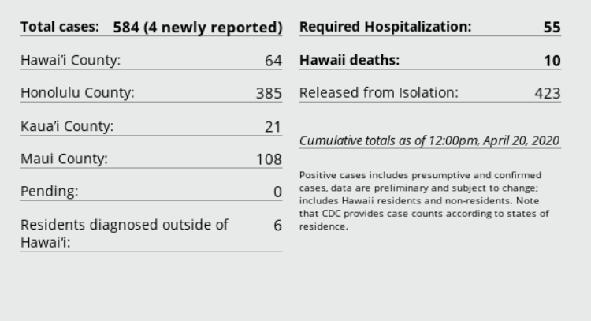
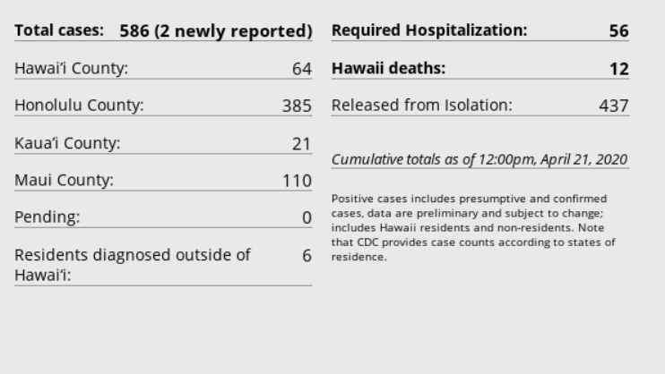
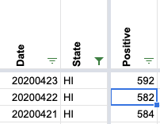
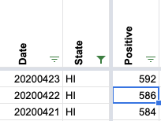

[HI] Hawaii positive increase on 4/22 is a negative number
Issue number 272
loglow opened this issue on April 23, 2020 at 1:54 am
Labels Historical Data Backfill
At present, the data returned by:
https://covidtracking.com/api/v1/states/daily.json
Shows the following value for state = HI on date = 20200422:
"positiveIncrease":-2
I have not checked for the presence of any other negative values, but this is the only one I’ve come across so far.
Comments
I got curious and wrote a tool to find errors like this: https://www.covidcharts.com/data_check.html
Entirely client-side JS, so feel free to re-use any of the code.
I got curious and wrote a tool to find errors like this: https://www.covidcharts.com/data_check.html
Entirely client-side JS, so feel free to re-use any of the code.
This is fantastic. Great work @loglow. I’ve been visually grepping through the same, but using the CSV datasource for https://c19.dev.
This issue has been automatically marked as stale because it has not had recent activity. It will be closed if no further activity occurs. Thank you for your contributions!
This issue has been closed because it was stale for 15 days, and there was no further activity on it for 10 days. You can feel free to re-open it if the issue is important, and label it as “not stale.”
“There’s a potential corruption of your Confirmed Positives historical data for several states. The data as reported should be cumulative amounts i.e. either increasing or constant - but in several places there have been new spikes added to past data and occasional dips, both producing negative Daily Positives after day-to-day subtraction. This is a recent development. I compared the current report with one ending on May 31 - and the discrepancies are (format: State, date new/old values or a multiday up-and-down sequence): … 5) HI, 4/21-22, 584, 582…” Instead of 584, 582, the values should be 584, 586.
Screenshot from state site on 4/21: 
Screenshot from state site on 4/22: 
***Our data for HI uses numbers “as of” the previous day according to the site
Independently checked the screenshots. The 6pm HI screenshot for 4/22 says 592 cases, but the surrounding numbers indicate the 12:00 screenshot matches what data entry was doing so I’m using the 12:00 number, 586.
Before: 
After: 
Regarding WA on 4/20, there’s no longer a decline in cases on that day. I think that was probably fixed as part of a previous backfill of Washington historical data.
I found another one.
WA on 4/20 = -12